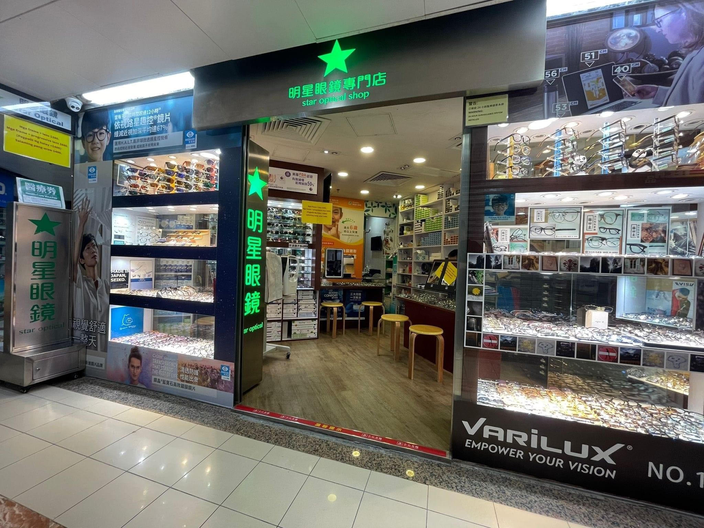

01夜間佩戴
OK 鏡
ORTHOKERATOLOGY
角膜矯形鏡片是現有兒童近視管理服務之一，門市提供驗配及覆診跟進。
查詢 OK 鏡評估
由了解開始，再選擇方案。
兒童近視管理 ／ 成人配鏡 ／ 學校護眼合作
01 / CHILDREN’S VISION
不同的近視管理方案，有不同的佩戴方式。先了解選擇，再透過驗眼與專業評估，討論適合孩子的安排。
ORTHOKERATOLOGY
角膜矯形鏡片是現有兒童近視管理服務之一，門市提供驗配及覆診跟進。
查詢 OK 鏡評估DAILY DISPOSABLE CONTACT LENSES
兒童近視管理的隱形眼鏡選擇。可向門市了解驗配、佩戴及日常安排。
查詢 MiSight 驗配ESSILOR STELLEST
門市提供星趣控及星趣控 2.0 鏡片服務，可查詢不同鏡片及配鏡安排。
查詢星趣控鏡片方案是否適合孩子，需經專業評估；可先向門市查詢服務內容及收費。
透過 WhatsApp 或電話，告訴我們你想預約兒童驗眼，或了解哪一項服務。
與門市確認可預約時段、服務收費，以及當日需要攜帶的物品。
按已確認的安排到店，由專業評估開始，再討論後續驗配及跟進。
FOR THE WHOLE FAMILY
03 / BEFORE YOUR VISIT
把到店前的問題先說清楚，讓每一步更有把握。
可 WhatsApp 5620 3542，或致電 2578 0013，向明星眼鏡北角門市查詢兒童驗眼、可預約時段及服務收費。預約時間以門市回覆確認為準。
門市提供的服務包括 OK 鏡、MiSight 每日即棄隱形眼鏡，以及 Essilor 星趣控及星趣控 2.0 鏡片。具體驗配安排及適用性，請向門市查詢並經專業評估。
預約時可向門市確認當日需要攜帶的物品、檢查前準備及預計所需時間；如孩子目前有佩戴眼鏡或隱形眼鏡，可一併告知門市。
門市位於北角英皇道 278–288 號，英皇柏麗大道地下商場 61 號舖。出發前可透過電話或 WhatsApp 確認當日營業及預約安排。